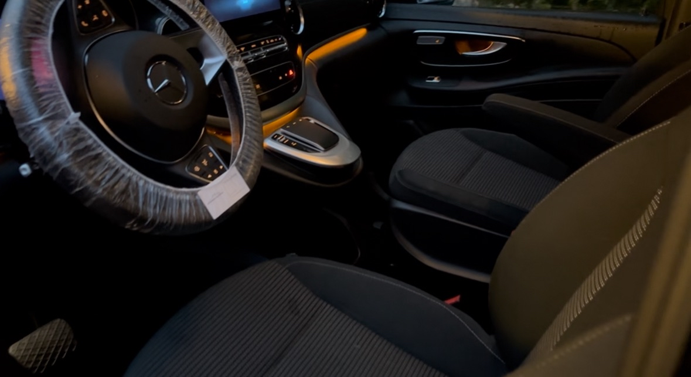
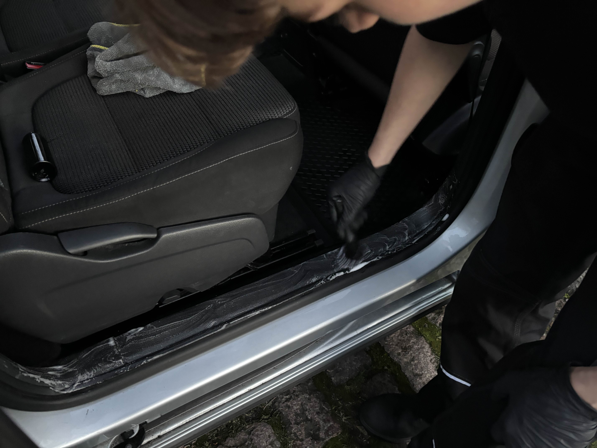

Full Detail – Standard
Når du ønsker komplet indvendig og udvendig bilrengøring.



Inkluderet i standard fuld bildetailing:
- Afpudsning af instrumentbord og alle overflader
- Afpudsning af alle vinduer
- Grundig støvsugning i alle kroge
- Dybdegående rens af måtter
- Gummishine på gummimåtter
- Gummishine på gummimåtter
- Dørfalser rengøres
- Forvask og afspuling af bilen
- Grundig kontaktvask med bilshampoo
- Grundig fælg- og dækrens
Tilkøb:
- Sæderens: 199,-
- Plastikpleje: 149,-
- Læderbehandling: 99,-
- Voksbehandling: 149,-
- Fjernelse af hundehår: 149-399,- (vurderes ved ankomst)
Pris:
● Lille bil – 849,-
● Mellem bil – 949,-
● 7-personers – 1149,-
💡OBS: Hvis din bil er meget beskidt, vil standard full detail ikke være tilstrækkelig. Vi anbefaler premium pakken.
Hvorfor vælge Svendborg Bildetail?
Vi går op i detaljen og kvaliteten i hver eneste bil. Vores kunder vælger os, fordi vi leverer synlige resultater, fair priser og personlig service. Uanset om du skal sælge bilen eller bare vil forkæle den, er fuld bildetailing den bedste investering.
Ofte stillede spørgsmål om fuld bildetailing
Hvad er forskellen på almindelig bilvask og fuld bildetailing?
En almindelig bilvask fjerner overfladesnavs, mens fuld bildetailing er en grundig og dybdegående rengøring af både bilens indvendige og udvendige dele. Hos Svendborg Bildetail arbejder vi med detaljer, som giver bilen et markant pænere udtryk og en følelse af at være som ny.
Hvor lang tid tager en fuld bildetailing?
En fuld bildetailing tager typisk mellem 1 og 3 timer, afhængigt af bilens størrelse og stand. Meget beskidte biler eller ekstra tilkøb som sæderens kan forlænge behandlingstiden.
Hvem har gavn af fuld bildetailing?
Fuld bildetailing er ideel for dig, der skal sælge bilen, lige har købt en brugt bil, eller blot ønsker at passe godt på din bil. Mange af vores kunder i Svendborg og omegn bruger behandlingen som en årlig opfriskning.
Kan man tilkøbe ekstra behandlinger?
Ja, du kan tilkøbe blandt andet sæderens, fjernelse af hundehår og voksbehandling. Tilkøb vælges nemt ved booking og tilpasses altid din bils behov.
Hvor udfører I bildetailing?
Vi tilbyder mobil professionel bildetailing i Svendborg og servicerer kunder fra hele Sydfyn. Vi tager altså ud til dig og klarer det hele! Kontakt os gerne, hvis du har spørgsmål til placering eller booking.